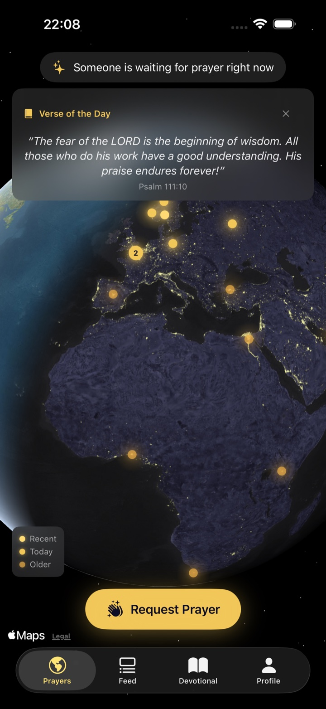
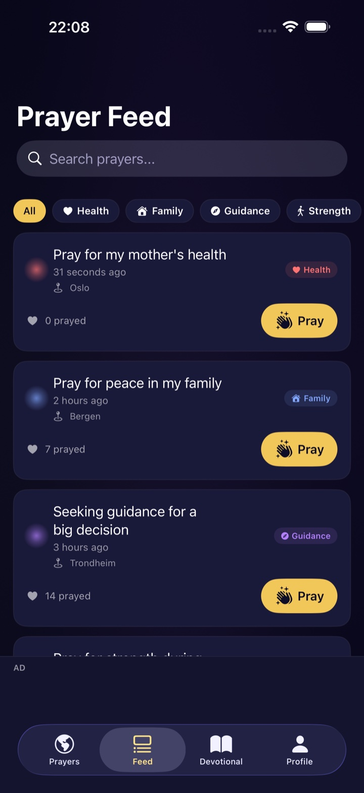
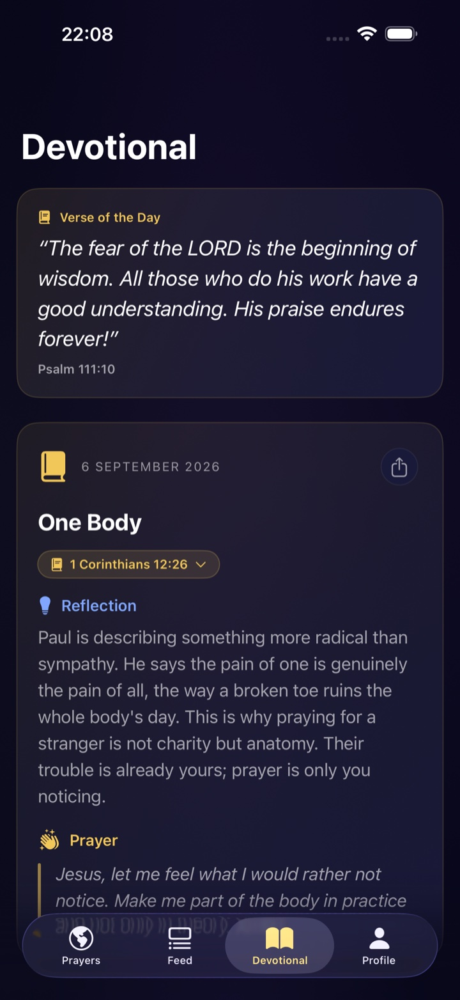

See prayer light up the world
The global prayer map turns shared requests into gentle points of light. Locations are always approximate and completely optional.
Coming to iOS and Android
HallelujahMeet brings people together in prayer — wherever they are. Ask for prayer when you need it, or be the person who prays when someone else does.
Ask for prayer. Pray for others. Pray together.

A simple rhythm
A prayer request becomes a light on the map. Another person sees it, pauses, and prays. You know that your prayer has been carried — without having to build a profile or perform for a feed.
The global prayer map turns shared requests into gentle points of light. Locations are always approximate and completely optional.
Find a request in the prayer feed, tap when you have prayed, and let a person know they were not alone in that moment.
Open a fresh Bible verse and devotional each day, with a short reflection and a suggested prayer you can carry with you.
The app interface supports 46 languages, while shared prayers can be translated so language does not have to become a wall.
Inside HallelujahMeet
No follower counts. No pressure to appear perfect. HallelujahMeet is designed to make space for one small, meaningful action: praying for another person.


“Carry each other’s burdens, and in this way you will fulfill the law of Christ.”Galatians 6:2
Preparing for launch
HallelujahMeet is being prepared for the Apple App Store and Google Play. Store links will appear here as soon as the apps are available.